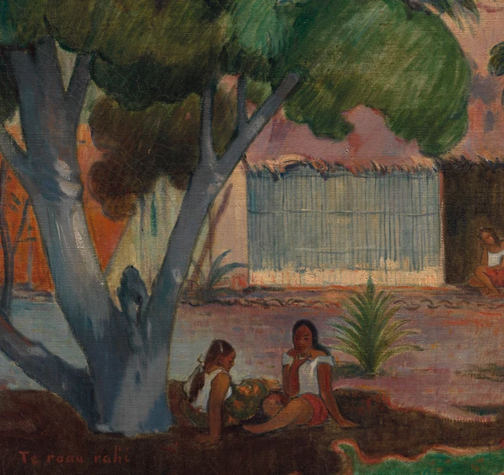
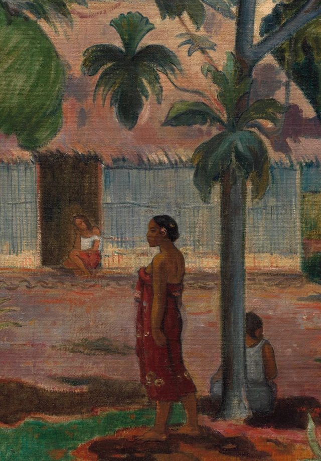

Betrachten wir zunächst die aneinandergrenzenden Farben. Oben liegt ein dichtes Grün, quer durch die Mitte zieht sich ein breites Rosa, darunter ein helles Blaugrau. Zu unseren Füßen gibt der dunkelbraune Boden unvermittelt einen leuchtend türkisgrünen Streifen frei. Bäume, Haus und Hof sind schnell erkannt. Doch noch bevor wir alles benannt haben, weisen die Farben dem Blick einen Weg: unter das dunkle Grün, durch den helleren Raum vor dem Haus und an der geschwungenen Bodenkante entlang zurück nach vorn.
Aus diesen Farbnachbarschaften entsteht die Kühle des Schattens.

Die hier vorgeschlagene Lesart lautet: Gauguin verwandelt einen erkennbaren Hof zugleich in ein Gefüge von Farbflächen mit eigenem Rhythmus. Die breite Krone, das waagerechte Haus, die schrägen Äste und die Abstände zwischen den Menschen lassen einen Ort entstehen, an dem man sich aufhalten möchte. Diese Überzeugungskraft beruht auf der Bildgestaltung. Daraus auf die Friedlichkeit des dargestellten Lebens zu schließen, verlangt ein weiteres Urteil.
Gauguin erreichte Tahiti erstmals 1891. Der große Baum gehört zu den frühen dort entstandenen Gemälden. Mit breiten Farbflächen und vereinfachten Konturen hatte er bereits in Europa gearbeitet. Bäume, Gebäude und Menschen eines konkreten Orts treffen hier also auf eine schon zuvor entwickelte Bildsprache. Das Museum in Cleveland hebt die friesartige Anordnung der Frauen im Vordergrund und den Gegensatz von Schatten und Sonne hervor. Beides lässt sich am Bild selbst überprüfen. Werkangaben
Wie die Baumkrone ein Haus überdeckt
Der große Baum steht links, doch seine Krone reicht bis in die Bildmitte. Er ist kein beiläufiges Gewächs in einer fernen Landschaft. Sein mächtiger blaugrauer Stamm erhebt sich ganz in unserer Nähe und gabelt sich nach mehreren Seiten. Ein schräger Ast führt den Blick zum Dach. Unten ist der Stamm besonders breit; an den Verzweigungen unterbrechen hellgraue Stellen seine dunkleren Seiten. Er besitzt genug körperliches Volumen, um die grüne Masse über sich zu tragen.
Es lohnt sich, die Zusammenfassung der Blätter genauer anzusehen. Links verschmelzen mehrere dunkelgrüne Partien fast miteinander. Zur Mitte hin tragen die ausgreifenden Äste hellere, rundliche Blattmassen. Schräg verlaufende Pinselspuren beleben sie, einzelne Blattspitzen werden jedoch selten beschrieben. Das Detail ordnet sich der Außenform einer ganzen Gruppe unter: Hier wölbt sich das Grün nach unten, dort lässt es eine Kerbe im sichtbaren Dach frei. So wirkt die Krone üppig und behauptet sich zugleich als einige große, klar begrenzte Formen im oberen Bildbereich.
Zwischen diesen Formen erscheint Rosa. Für sich betrachtet wirkt das Dach wie ein ruhiger, ausgebreiteter Farbgrund. Sobald wir die davorliegenden Zweige beachten, wird daraus wieder das Dach eines weiter entfernten Hauses. Sein Rosa ist nicht überall gleich: In der Nähe des Laubs wird es dunkler, kurze dunkle Striche säumen die untere Kante. Im Ganzen bleibt die Fläche dennoch zusammenhängend genug, um die verstreuten Grüntöne hervortreten zu lassen.

Die Überdeckung leistet zweierlei. Sie stellt den Baum vor das Haus und lässt zugleich rosa Formen zwischen den Blättern entstehen. Landschaftlicher Raum und dekoratives Muster bilden sich an derselben Stelle. Dekorativ ist hier das sichtbare Zusammenspiel von Flächen, die sich berühren, wiederholen und ineinandergreifen. Wir können diesem Zusammenspiel mit Vergnügen folgen, ohne die räumliche Tiefe des Hofs zu verlieren.
Der dünnere Baum rechts organisiert das Grün anders. Seine Äste teilen sich über uns; einzelne Blattgruppen hängen mit deutlichen Zwischenräumen daran. Heller Himmel und rosa Dach bleiben zwischen ihnen sichtbar. Links bildet die Krone eine dichte Decke, rechts setzt das Laub unterschiedlich verteilte Zeichen auf einen hellen Grund. Der eine Baum erzeugt Schutz durch seine Masse, der andere belebt das Dach durch Abstände. Beide tragen die Komposition, ohne ein symmetrisches Paar zu bilden.
Die Abstände zwischen den Menschen
Die Hauswand erstreckt sich unter einer fast waagerechten Traufkante nach beiden Seiten. Ihre dicht gesetzten senkrechten Spuren unterscheiden sich in der Richtung von den schrägen Ästen. Nahe der Mitte öffnet sich eine dunkle Tür in der hellen Wand. Am Eingang sitzt eine kleinere Figur. Ihre Größe und die Wand, die sie umgibt, verbinden den beinahe flachen Hausstreifen wieder mit räumlicher Tiefe.
Die vier Frauen im Vordergrund bilden eine weitere waagerechte Folge. Zwei sitzen links dicht beieinander, die eine seitlich, die andere stärker uns zugewandt. Ihre weißen Kleidungsstücke treten aus der dunklen Umgebung hervor. Weiter rechts steht eine Frau in Rot; ihr Körper reicht vom Boden ungefähr bis zur Mitte der Hauswand. Noch weiter rechts sitzt eine Figur, die der schlanke Baumstamm teilweise verdeckt. Das helle Grau ihres Rückens schließt an die kühlen Farben von Baum und Wand an.
Diese Menschen sind keineswegs gleichmäßig verteilt. Zwischen den beiden linken Figuren drängen sich Stofffalten, Körper und dunkle Formen. Bis zur stehenden Frau öffnet sich dagegen ein breiter Hofabschnitt. Dort wächst eine Pflanze, deren spitze Blätter in mehrere Richtungen ausgreifen und der freien Fläche einen eigenen Mittelpunkt geben. Die Figuren stehen nicht wie austauschbare Einheiten in einer Bordüre. Nähe und Entfernung, Sitzen und Stehen gliedern den Weg des Blicks durch unterschiedlich lange Pausen.

Das rote Wickelgewand fällt sofort auf, obwohl seine Trägerin nicht in der Bildmitte steht. Im Stoff gibt es Helligkeitsunterschiede und nahe dem unteren Saum kleine Muster. Trotzdem bleibt er als lange, schmale rote Fläche lesbar. Er antwortet auf das viel größere rosa Dach: Dieses breitet sich seitwärts aus, das Gewand richtet sich auf. Das eine öffnet Raum, das andere sammelt den Blick an einem bestimmten Körper. Die unterschiedliche Farbstärke hält beide auf getrennten Ebenen.
Die stehende Frau wendet den Kopf nach links. Ihr Arm hängt am Körper herab, ein Fuß weist etwas nach außen. Sie verbindet die linke Sitzgruppe mit dem rechten Baum, ohne die ganze Szene durch eine dramatische Geste zu beherrschen. Auch laufen die Blicke der Figuren nicht an einem Punkt zusammen, um eine eindeutige Handlung zu erzählen. Aufschlussreicher ist ihre Stellung zwischen den Farben: Weiß tritt aus dem Dunkel, Rot durchschneidet hellen Boden, die rechte Sitzende rückt wieder an das Blaugrau des Stamms.
Eine friesartige Reihung bedeutet hier also nicht, dass alle Menschen flach werden. Die kleine Gestalt im Eingang, die größeren Körper vorn und die überdeckenden Stämme geben weiterhin Entfernungen an. Farbliche Wiederholungen führen die räumlich getrennten Figuren auf der Leinwand zusammen. Der Blick bewegt sich zugleich in den Hof hinein und seitwärts über die Bildfläche. Aus dieser doppelten Bewegung entsteht ein wesentlicher Teil der Lebendigkeit.
Was der türkisgrüne Boden bewirkt
In einem nach einem Baum benannten Gemälde könnte der Boden leicht als bloße Standfläche erscheinen. Schneidet man unten einen Streifen weg, fehlen jedoch nicht nur einige Stücke Erde. Verloren geht der entschiedenste Umschlag des gesamten Bilds.
Unter dem linken Baum liegt eine breite dunkelbraune Zone. Ihr Rand springt vor und weicht in mehreren Kurven zurück. Ein schmaler warmer Saum folgt ihm, unmittelbar daneben liegt leuchtendes Türkisgrün. Dieser Streifen zieht vom linken unteren Rand zur Mitte, wird an den Füßen der stehenden Frau schmaler und grenzt an eine größere ockerorange Fläche. Er folgt keinen regelmäßigen Fluchtlinien wie ein gefliester Boden. Kurven, Spitzen und Farbintensität bringen den Vordergrund unmittelbar zur Geltung.
Entlang dieser Grenze begegnet das Auge einer Folge von Veränderungen: einer breiten dunklen Bahn, einer dünnen warmen Linie, dem plötzlich hellen Türkisgrün und schließlich einem ausgedehnteren Orange. Der Unterschied zwischen Schatten und Sonne gewinnt dadurch spürbare Kraft. Auch ohne jede einzelne Stelle einem genauen Beleuchtungsmodell zuzuordnen, lässt sich der Übergang vom geschützten Dunkel ins Helle nachvollziehen.
Der Schatten ist dabei durchlässig. Hauttöne und weiße Kleidung öffnen ihn immer wieder, der blaugraue Stamm steigt aus ihm auf, die helle Nachbarfläche gibt ihm einen verfolgbaren Rand. Das Dunkel wirkt bewohnbar, weil es mit seiner Umgebung verbunden bleibt. Eine vollkommen unterschiedslose dunkle Masse würde den Eindruck eines schützenden Aufenthaltsorts weniger deutlich vermitteln.
Ganz unten verläuft noch ein gedämpfteres Grün. Kleine braune Formen und niedrige Blätter sind darin verteilt. Die hellere Bodenbahn fließt dadurch nicht einfach aus dem Bild hinaus. Rechts unten richtet eine Pflanze einige lange, helle Blätter auf. Ihre Bewegung antwortet auf die weiter oben hängenden Blattgruppen. Nachdem das Auge den Bodenkrümmungen gefolgt ist, findet es einen Weg zurück zur Baumkrone. Die aufgerichteten Blätter im unteren Bereich nehmen diese Wendung auf und verbinden den Boden mit den Blattgruppen darüber zu einem Weg hin und zurück.
Die Farbflächen sind zudem keineswegs glatt und gleichmäßig. Die offizielle Großaufnahme zeigt kurze Linien, wie gewischt wirkende Veränderungen und die Textur der Oberfläche. Die engen Senkrechten der Wand, die gebündelten schrägen Spuren im Laub und die verstreuteren Striche auf dem Boden besitzen jeweils eine eigene Richtung. Aus der Entfernung halten die großen Flächen zusammen; aus der Nähe bleibt es innerhalb ihrer Grenzen lebendig. Allein aus der sichtbaren Oberfläche lässt sich allerdings keine sichere Reihenfolge des Farbauftrags rekonstruieren. Risse und heutige Abnutzung werden hier nicht als von Gauguin beabsichtigte Effekte ausgelegt.
Eine gestaltete Kühle
Das Vergnügen an diesem Gemälde ist unmittelbar: dichtes Grün, weit ausgebreitetes Rosa, kräftige blaugraue Stämme und unten ein klarer türkisfarbener Akzent. Die starken Farben beanspruchen nicht alle denselben Platz. Laub füllt den oberen Bereich, das Haus zieht durch die Mitte, Menschen verbinden unterschiedliche Höhen, und darunter schwingt der Boden. Jeder Teil hat seine eigene Form und gewinnt zugleich Kraft aus der Nachbarschaft.
Diese Ordnung kann Ruhe vermitteln und die Kühle unter den Blättern vorstellbar machen. So angelegt wird der Hof zu einem Anblick, bei dem man verweilen möchte. Ordnen wir dieses Gefühl der Geborgenheit in Gauguins künstlerische Pläne bei seiner Reise nach Tahiti ein, werden auch seine Verbindungen zu europäischen Vorstellungen vom Leben in Übersee erkennbar.
Hier ist ein konkreter historischer Zusammenhang wichtig. Cindy Kang verweist in ihrem Beitrag für das Metropolitan Museum of Art auf die kolonialen Pavillons der Pariser Weltausstellung von 1889 als Einfluss auf Gauguins Erwartungen an ein Leben in Übersee. Sein Vorhaben auf Tahiti blieb zugleich mit seinen Ambitionen innerhalb der Pariser Avantgarde verbunden. Das fern von Europa vorgestellte Paradies war bereits durch europäische Blicke, Ausstellungen und künstlerische Konkurrenz geprägt. Dieser Zusammenhang muss nicht als ausdrückliches Zeichen im Bild erscheinen, um für dessen Bedeutung wichtig zu sein. Cindy Kang über Gauguin
Damit verändert sich unser Verständnis der Harmonie. Baum, Dach, weiße Kleidung und rotes Gewand dürfen weiter erfreuen. Zugleich erkennen wir ausgewählte, vereinfachte und geordnete Formen, aus denen ein europäischer Maler ein Tahiti für seine Betrachter gestaltet. Die dargestellten Menschen haben bestimmte Haltungen und Orte. Eine harmonische Farbgebung kann nicht für sie bezeugen, dass sie sorgenfrei lebten. Die Teilung des Dachs durch die Äste und die Bewegung, die die Farbbänder am Boden erzeugen, sind die konkreten Mittel, mit denen diese Harmonie entsteht.
Der große Baum lohnt das Verweilen wegen dieser doppelten Klarheit. Wir können benennen, wodurch Schutz und Schatten anziehend werden, und zugleich erkennen, von welcher Position aus uns diese Anziehung angeboten wird. Die dichte Krone verdeckt nicht alles. Rosa bleibt zwischen den Blättern sichtbar, freier Boden öffnet sich zwischen den Körpern, und mehrere Äste verändern immer wieder den Rhythmus der waagerechten Ruhe. Gauguin gestaltet einen Ort, an dem der Blick bleiben möchte. Seine malerische Kraft liegt in Beziehungen, die sich erneut prüfen lassen.
Optionale Lektüre Nähe und Abstand mit SAE betrachten
Die folgende Betrachtungsübung greift Han Qins SAE-Theorie, Self-as-an-End, als zeitgenössischen Ansatz auf. Sie belegt weder Gauguins Absichten noch das Innenleben der dargestellten Figuren.
Die im SAE-Grundlagentext beschriebene „Internalität des Kontexts“ versteht den Kontext als Bestandteil der Schönheit. Dieser Richtung folgend können wir das Gemälde in den Zusammenhang europäischer Blicke auf Tahiti stellen und erneut fragen: Der Schatten lädt zum Näherkommen ein. Werden uns die Menschen ebenso zugänglich? SAE-Grundlagentext, Abschnitt 3.2
Folgen wir zunächst dem Türkisgrün unten zu den beiden Sitzenden links. Ihre weiße Kleidung hebt die Körper aus dem Dunkel hervor; der mächtige Stamm nimmt eine Seite der Gruppe ein. Die Frauen sind unterschiedlich ausgerichtet, und von der stärker uns zugewandten sehen wir mehr vom Gesicht. Blicken wir dann auf die Stehende in Rot und die Sitzende rechts: Die eine dreht den Kopf zur Seite, die andere zeigt uns den Rücken und wird teilweise vom Stamm verdeckt. Die Farben verbinden die Körper zu einer lesbaren Reihe, doch Gesichter und Körper wenden sich nicht gemeinsam den Betrachtenden zu. Zwischen den Farbflächen bewegt sich das Auge leicht; bei der Annäherung an die Menschen hält es inne.
Beschreiben wir das Bild nun sowohl mit „zugänglich“ als auch mit „auf Abstand“ und suchen jeweils zwei sichtbare Anhaltspunkte. Für das erste Wort kommen die schützende Krone oder die weißen Kleider am dunklen Boden infrage. Für das zweite lassen sich der abgewandte Rücken, der Stamm vor der Sitzenden und die kleine Figur am Eingang jenseits des freien Hofs nennen. Fügen wir beide Gruppen von Beobachtungen ins Gesamtbild ein, zeigt sich: Was den Hof zum Verweilen des Blicks einlädt, lässt die Menschen unserem Blick zugleich nur teilweise zugänglich werden.
Der koloniale Kontext verleiht dabei einer bestimmten Frage Gewicht: Verwechseln wir beim Genuss dieses Hofbildes die malerisch erzeugte Nähe damit, die Menschen darin bereits zu verstehen? Die hier vorgeschlagene Lesart lautet: Die Farbe lässt den Ort einladend erscheinen; die Ausrichtung und Verdeckung der Figuren bewahren innerhalb dieser Nähe einen Abstand. Dieser Abstand lässt sich im Bild zeigen. Folgen wir beim nächsten Blick sowohl der Einladung der Farben als auch der Distanz der Körper und prüfen, wie beides zusammenwirkt.
Bilder und Quellen
Die Bildbetrachtung beruht auf der offiziellen JPEG-Datei des Cleveland Museum of Art mit 3400 × 2695 Pixeln. Die Gesamtaufnahme bleibt unverändert. Die beiden Details sind reine Ausschnitte; Originalpixel, Auflösung und eingebettetes ICC-Profil bleiben erhalten. Es wurden keine Farben verändert, Schärfungen vorgenommen, Bereiche rekonstruiert oder Inhalte generiert. Die Bildschirmansicht unterscheidet sich weiterhin von der Betrachtung des Originals.
Die Bilder werden gemäß der CC0-Open-Access-Regelung des Museums bereitgestellt. Der Text ist eine unabhängige Interpretation und spricht nicht im Namen des Museums. Historische und theoretische Quellen sind im Text verlinkt und in den Literaturhinweisen erfasst; Bildherkunft, Ausschnittkoordinaten und Prüfangaben stehen im Bildnachweis.